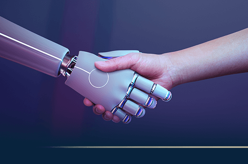

A Inteligência Artificial (IA) vem evoluindo rapidamente nos últimos anos e já faz parte do dia a dia de milhões de pessoas. Ela é utilizada em celulares, computadores, carros, hospitais, escolas e até mesmo em jogos eletrônicos.
Atualmente, a IA consegue entender textos, reconhecer imagens, criar músicas, responder perguntas e até desenvolver códigos de programação. Esses avanços são possíveis graças ao aprendizado de máquina (Machine Learning) e ao aprendizado profundo (Deep Learning).
Especialistas acreditam que a Inteligência Artificial continuará evoluindo e ajudará em diversas áreas, como medicina, educação, segurança, indústria e pesquisa científica. Ao mesmo tempo, será importante utilizar essa tecnologia de forma ética e responsável.
Data da publicação: 07/08/2026